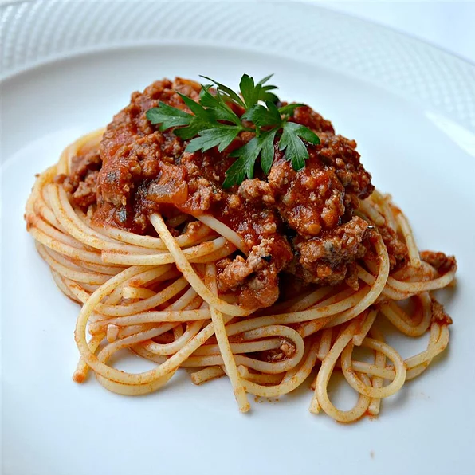

Mama Palomba's Spaghetti Sauce

I got this recipe 30-plus years ago from a neighbor's mother who lived in Italy. It is delicious and always well received. Sub all or part of the ground beef and sausage for turkey or chicken products to lighten the recipe.
Ingredients
- 2 (28 ounce) cans plum tomato puree
- ½ pound hot Italian sausage, sliced into bite-sized pieces
- ½ pound mild Italian sausage, sliced into bite-sized pieces
- 2 pounds ground chuck
- salt to taste
- ground black pepper to taste
- 1 large onion, diced
Steps
- Heat tomato puree in a large pot over medium-low heat; simmer while prepared the remaining ingredients.
- Heat a skillet over medium heat; cook and stir hot Italian sausage, mild Italian sausage, and ground chuck until browned and cooked through, 10 to 15 minutes. Season with salt and pepper. Remove cooked sausage and chuck with a slotted spoon and transfer to the simmering tomato puree.
- Cook and stir onion and garlic in the same skillet used for browning meat until onions are lightly browned, 5 to 8 minutes. Transfer onion mixture to meat mixture.
- Stir water and tomato paste in the same skillet used for onion mixture over low heat until slightly thickened, about 15 minutes; add to the sauce in the pot. Sprinkle Parmesan cheese, basil, oregano, and parsley over the sauce; stir to combine. Simmer over low heat, stirring occasionally, for 3 hours.